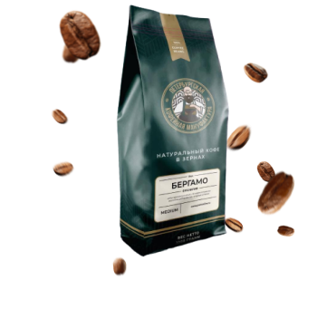
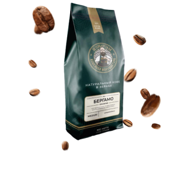

Закупаем кофе с плантаций
без посредников
Обжариваем зерна
на собственном производстве
Предлагаем доступные цены
за преимум качество
Обжариваем и доставляем свежий кофе с 2013 года
За много лет приобрели опыт, стали экспертами производства обжарки кофе и при этом остались людьми, всё это помогает нам производить совершенный кофе для всех наших клиентов.
Мы проводим контрольные капинги и заключаем контракты на поставки отборного зерна каждый новый урожай.
Имеем собственное технологичное производство
в Санкт-Петербурге, производственная мощность которого
5 000 кг. в сутки.
Закупаем и привозим свежие зерна кофе
со всего мира
Обжариваем
на технологичных
ростерах Typhoon
Затем осуществляется контроль качества
и каппинг каждой партии
Далее отправляем свежеобжаренный кофе
на фасовку и упаковку
После чего готовый продукт передается
в отдел доставки
Вы получаете поставку свежего кофе во время
и без задержек
Работаем быстро
— ценим ваше время
Моментально обрабатываем заявки поступающие с сайта, высылаем оптовый прайс и помогаем определиться
с сортом кофе.
Запускаем вашу партию в производство в течении
суток после заказа.
По готовности сразу передаем в отдел доставки
и присылаем вам трек-номер для отслеживания.
Оперативная и отлаженная доставка свежего кофе
Доставляем свежеобжаренный кофе с нашего производства
в любую точку России в среднем за 5 дней после заказа.
Логистика по всей России отлажена до мелочей. Мы поможем
с выбором транспортной компании, которая доставляет в ваш
город.
Для клиентов из Санкт-Петербурга доставляем кофе на автомобилях компании на следующий день после заказа.
За вкус и качество кофе отвечаем головой
Вкус кофе остается не изменным на регулярной основе от партии к партии, благодаря функциональности новейшего и технологичного оборудования на произвосдтве ПКМ.
лучшее сырье
Мы не экономим на сырье, закупаем натуральный кофе с плантаций в странах Эфиопии, Бразилии, Бразилии, Колумбии, Гватемалы, Мексики, Коста-Рики, Гондураса, Эфиопии, Вьетнама, Перу и Сальвадора.
Непосредственно перед обжаркой кофе хранится на складе зеленого кофе, который соответсвует мировым стандартам. Температура воздуха +15°С при относительной влажности 55-60 г/м³
Мы обжариваем кофе на новейших ростерах “Typhoon” с запатентованной системой обжарки в кипящем слое. Никогда еще обжарка кофе не была такой равномерной, стабильной и чистой!
очищаем
С помощью дестонера, такого специального аппарата вычленяем из кофе всякие камни и другие инородные элементы, без этого этапа камень может безвозвратно убить кофемолку.
Ваш кофе фасуется по пакетам из полимерного материала с плоским дном, оснащенных дегазационным клапаном, с замком типа «молния». Фасовка в пакеты по 1 кг и 250 гр.
на производство
Приглашаем всех клиентов в гости к нам на производство в городе Санкт-Петербург. Мы регулярно проводим дегустацию новых и зарекомендованных сортов кофе свежей обжарки и у вас есть возможность попробовать и открыть для себя новый вкус кофе.
На выбор более 30 сортов кофе
Предлагаем ТОП ассортимент: смеси, моносорта и микролоты из Бразилии, Колумбии, Гватемалы, Мексики, Коста-Рики, Гондураса, Эфиопии, Вьетнама, Перу и Сальвадора
С нотами арахиса, какао и цедры лимона. По мере остывания напитка добавляются ягодные оттенки.
от 480 ₽ / кг.С нотами какао, цветов и меда.
Легкая кислинка фруктового вина.
С нотами арахиса, горького
шоколада и легкой кислинкой фруктовых вин.
Что о нас говорят
наши клиенты
Наши профессионалы
сделают всё на высшем уровне
История ПКМдоступная цена на кофе свежей обжарки
Кофе собирается на плантациях и проходит через множество этапов прежде чем попасть в вашу кофемашину.
Наш конроль качества зерна начинается с момента сбора
урожая и заканчивается приготовлением первой чашки кофе
для каждой партии.
Минимальная партия оптового заказа
Стоимость за 1 кг. кофе свежей обжарки